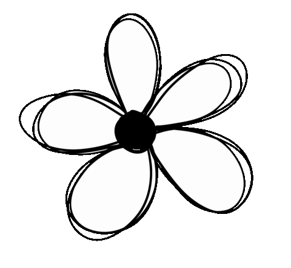
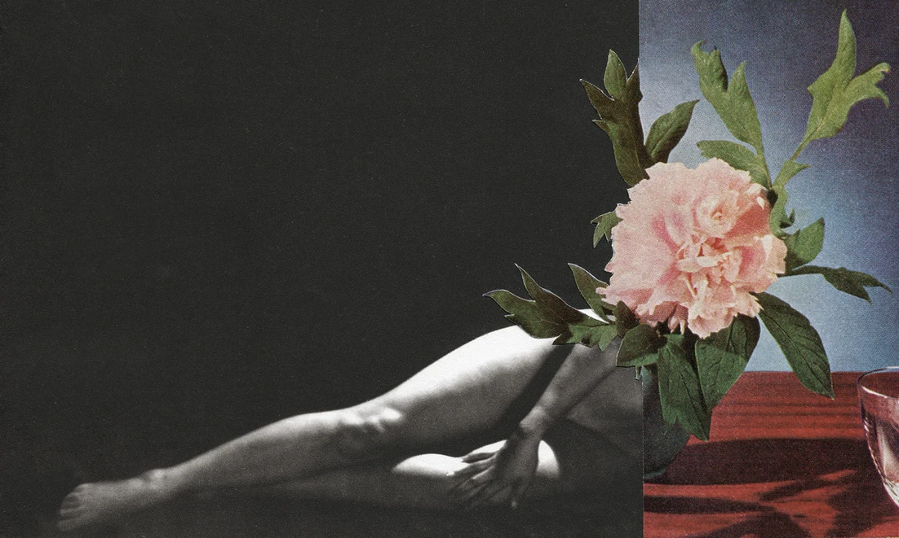
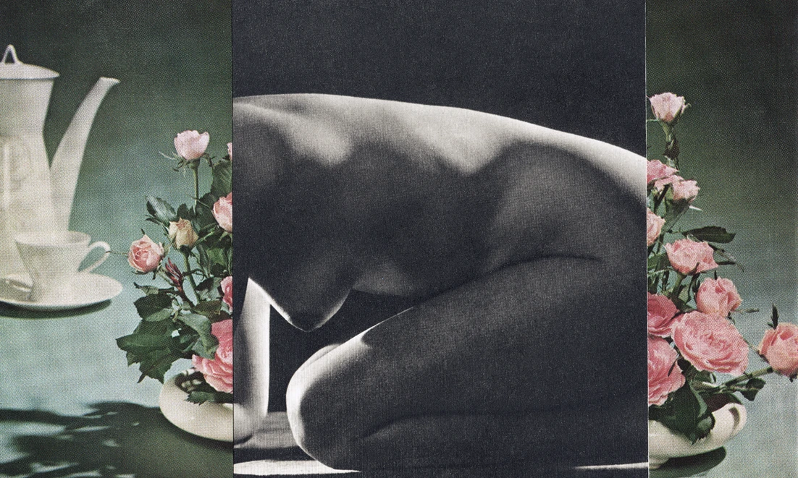
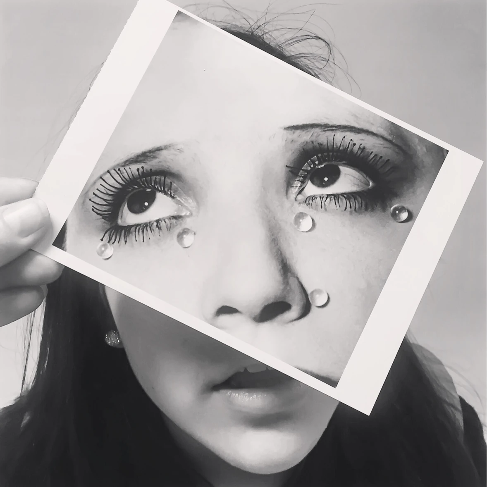

LetsCollage

Paloma Rodriguez
May 02, 2024
Artist Bio:
Erin McGean, also known as LifeWithArt, is a Toronto-based collage artist with a background in Fine Art and Education. With over 15 years of experience as a practicing artist, Erin's work has garnered recognition and is featured in various publications and art collections, both public and corporate. Her artistic journey has been shaped by a commitment to exploring the interplay between visual culture, personal identity, and the influence of past ideologies on our present and future.
Through her creative process, Erin delves into the complexities of visual culture, using vintage images as a canvas for her artistic expression. By recontextualizing these images in her collages, she invites viewers to reflect on their personal connections to the past and challenges prevailing narratives. The techniques of juxtaposition and layering are central to her artistic practice, revealing the intricate interplay between history, memory, and self-discovery.
With her thought-provoking work, Erin sheds light on the enduring impact of visual culture and our place within the evolving narrative of human history. Her art encourages introspection and invites viewers to reimagine future paths shaped by the influences of the past. Through her artistic exploration, Erin inspires personal growth and deeper insights, illuminating the transformative power of art. By fostering dialogue and reflection, she sparks a profound connection between art, personal identity, and our shared human experience.

About the work:
You Don't Bring me Flowers, is an on-going collage series that Erin McGean began minting and selling back in 2022 to explore the historical constructs of femininity, beauty, and desire. Born out of a time of isolation during the pandemic, each composition emits a palpable sense of confinement. As viewers engage with the series, they are asked to contemplate and question the enduring impact of historical imagery and their resonance in shaping contemporary perceptions of femininity and interpersonal dynamics. By presenting nudity in a way that is normalized and stripped of its sexualization, the work invites viewers to reassess their own perceptions of nudity in art. It’s a call to see beyond the physical form, to appreciate the strength, vulnerability, and stories inherent in the female body. The act of pairing these nudes with flowers—a symbol of both beauty and ephemerality—reflects the layers of womanhood and the fleeting nature of the standards imposed upon it.” Ultimately, the series encourages a dialogue on how these historical depictions have shaped us. It’s an attempt to dismantle long-held perceptions, allowing us to emerge with a deeper understanding of our identities, free from the constraints of the past's gaze. This series includes hand cut-collages offered with a Limited edition signed print on Hahnemühle paper to the primary collector.
Could you share some insights into your background in fine art? What areas did you focus on in your studies?
Erin: I pursued a Bachelor of Fine Arts at York University in Toronto, immersing myself in painting, drawing, and art history. Following this academic pursuit, I furthered my education with a Bachelor of Education degree. For years post-graduation, I focussed my artistic pursuits primarily in painting, however once I had kids it became a bit harder to find time for painting. It was at this time that I pivoted my focus towards collage as the medium of choice for my work.
What gravitated you initially to collage as a medium for your work?
Erin: I would say early on as a result of using Instagram, I found myself drawn to the world of photography. As I dove into image editing through various apps, I noticed that these edits slowly began to adopt a collage-like aesthetic. However, I came to miss the tangible essence of traditional art-making—the tactile experience of working with studio materials. I turned from digital compositions to physical collage. In this transition from pixels to paper, I discovered a harmonious balance. Within this synthesis of mediums, I found a newfound sense of creative liberation—a space where the precision of digital editing and the spontaneity of physical collage could coexist in perfect harmony. It is within this balance that my artistic practice thrives, seamlessly weaving together the past and present, the digital and analog, to create compositions that resonate with both the digital and physical space.

Your artistic practice involves re-contextualizing vintage images in your collages to provoke reflection on personal connections to the past. Could you share more about how you choose the images you include and what draws you to them?
Erin: I select vintage images that resonate on a personal level, often seeing reflections of my own life experiences within them. The female figure has been a central motif in my art, serving as a conduit for exploring the concept of 'self' over time. Found images are curated based on their ability to evoke memories or emotions related to my own past or that of individuals close to me. Images from previous decades, particularly the era of my childhood, carry a very specific nostalgic weight, prompting introspection about the formative years of my identity.There's a fascination with how the portrayal of women in historical media has the power to shape and sometimes constrain our understanding of femininity and individuality. The act of re-contextualizing these images in modern collages is also an attempt to dissect and understand the pervasive stereotypes and ideologies they represent. By integrating these vintage depictions into contemporary art, I invite viewers to consider how the past informs the present, particularly in the realm of gender roles and expectations. My process is partly intuitive, drawn to images that spark a sense of familiarity or curiosity, and partly critical, questioning the ongoing impact of these visuals on collective memory and personal growth. It's important that each chosen image not only communicates with the other elements in the collage but also engages with the viewer on a level that transcends mere aesthetics, delving into deeper societal commentary. Ultimately, this series is a personal and communal exploration of how historical imagery weaves into the fabric of our current identities and continues to inform our societal self-image.
The themes of history, memory, and self-discovery are central to your work, particularly through the technique of layering. How do you navigate these complex themes in your artistic process, and what gravitates you most to the use of layering in your work?
Erin: Layering allows me to obscure part of the images I work with. Since I usually use only 1 or 2 images in my collages, the physical labor of cutting and layering is the only way I can alter the original statement or intention. By obscuring parts of the images I work with, layering allows me to transform familiar visuals into new statements, breathing fresh life into the narrative.
Your work fosters dialogue and reflection, sparking a profound connection between art, personal identity, and our shared human experience. Is there an artist or artwork that you experienced a similar sense of introspection from?
Erin: Personally, I have found profound inspiration from the works of American artist, Martha Rosler, particularly from her series 'Bringing the War Home.' Rosler's innate ability to weave together personal narratives with broader political contexts has left a lasting imprint on my own creative approach. Her collages are a testament to the intricate interplay between society and our individual lives, prompting us to reflect on societal roles and the ramifications of global events. Her technique of recontextualizing images to scrutinize and critique social norms drives me to delve deeper into the narrative complexities within my own collages and how they might manifest within my work. Equally influential is the work of John Stezaker. His collage technique, characterized by its minimalist use of one or two found images per piece captivates with its ability to reconstruct identities through subtle yet profound manipulations, blurring the lines between the familiar and the surreal. Stezaker's approach encourages a reevaluation of how we perceive identity and engage with visual representations. It has inspired me to embrace simplicity in composition, using spare imagery or compositions to explore the intricate themes of identity and perception, inviting viewers to challenge their preconceptions and reassess the nuances of both greater human and personal experiences.
This series specifically is titled You Dont Bring Me Flowers, what inspired this body of work?
Erin: You Don't Bring Me Flowers is a deeply personal collage series that began during the pandemic, exploring my own emotions and experiences within the frameworks of historical femininity, beauty, and desire. This work juxtaposes vintage nude photography with vases of flowers to challenge and dissect the constructed ideals of romantic beauty and the male gaze. The series showcases pin-up girls, representing a hyper-feminine ideal with exaggerated curves and seductive poses, contrasted against the delicate beauty and traditional romantic symbolism of flowers. This juxtaposition questions the expectations placed on women and critiques how romantic and feminine ideals are constructed and performed. In the series, each collage captures a sense of being confined, perhaps mirroring the isolation I felt during the pandemic, and prompting a dialogue between the past and present. Through this, the series encourages viewers to reflect on how these historical images and ideals continue to shape and influence our understanding of femininity and interpersonal relationships today. The isolation of the pandemic is long over but I continue to use the You Don't Bring Me Flowers series as a vessel to delve deeper into my experiences. The ongoing project serves not only as a reflection of a unique period in history but also as a space to continuously explore and express evolving aspects of personal identity, societal roles and emotional landscape. Through these collages I invite viewers to join in a collective introspection, examining how our shared experiences and individual journeys intersect and influence our perceptions of beauty, desire and self.
The placement of the imagery itself within this series is always set to a seemingly intentional composition. What if any is the intention behind placement you choose for where the black and white image ends and the colored image begins?
Erin: The intent behind the composition and placement of image and color within my work follows the philosophy of “less is more,” maximizing the narrative through minimal visual elements. It is through this pursuit of simplicity in composition that each placement is carefully considered in order to achieve visual balance and as such establish harmony within the collage. The selection of images I work with aims to create a sense of unity across the work, while adding layers of intrigue through the careful exploration and concealment of the female nude form. For example, I often employ flowers to complete or mirror the lines and curves of the body, creating a visual echo. Additionally, I intentionally direct where the black and white images transition to color in an attempt to guide and as a result direct the viewer's focus within the work. This use of color and composition invites viewers to engage with the collage on multiple levels, prompting contemplation of both its surface aesthetics and its deeper underlying themes. The juxtaposition of vibrant colors alongside black and white also serves as a deliberate artistic choice in my work. In essence, the choice and placement of colors are not just an artistic decision but a narrative device that underscores the series' thematic exploration of identity, memory, and societal evolution. The use of black and white imagery, for example, offers a sense of contrast, allowing certain elements to stand out prominently while evoking a sense of timelessness and nostalgia. By converging contemporary colored images with black and white ones I am able to represent the merging of both the past and present.

This series portrays and highlights photos of vintage female nudes. Can you tell me a bit more about the significance here as it relates to self discovery, the female gaze, and perhaps undoing a viewer's perception of nudity in art?
Erin: Growing up amidst the pervasive imagery of 'ideal' beauty in magazines and on screen, 'You Don't Bring Me Flowers' is my introspective journey through the gardens of self-discovery. It juxtaposes the vintage nudes, reminiscent of the images that once defined allure and femininity, with the unspoken narratives behind such portrayals. These nudes represent more than their surface beauty; they are the canvases onto which society has historically projected its standards. In repurposing these images, I aim to reclaim the narrative and to view these figures through the female gaze—an empathetic, understanding, and self-aware lens. This is not the impersonal gaze that objectifies, but one that recognizes and resonates with the shared experiences of pressure, expectation, and the quest for self-acceptance. Ultimately, the series encourages a dialogue on how these historical depictions have shaped us. It’s an attempt to dismantle long-held perceptions, allowing us to emerge with a deeper understanding of our identities, free from the constraints of the past's gaze.
Do the flowers you choose within each piece carry meaning? For example the iris signifies faith, hope, and courage. Is this intentional for the understanding of this piece?
Erin: The flowers chosen transcend their individual meanings to delve into the collective cultural perceptions they embody. These flowers are not merely decorative but are imbued with complex symbolism—they are emblematic of romance and apology but also bear the weight of societal expectations on women. Representing both the phallic and the traditionally feminine, flowers underscore the dual aspects of femininity and sexuality. This duality speaks to broader themes such as female desires and the ways in which women are often depicted as mere objects of beauty in both art and society. Their role in cultural rituals, from romantic gestures on Valentine's Day to expressions of regret, adds depth, reflecting the multifaceted experiences and expectations faced by women.

Erin McGean
Also known as LifeWithArt, is a Toronto-based collage artist with a background in Fine Art and Education. With over 15 years of experience as a practicing artist, Erin's work has garnered recognition and is featured in various publications and art collections, both public and corporate. Her artistic journey has been shaped by a commitment to exploring the interplay between visual culture, personal identity, and the influence of past ideologies on our present and future. Through her creative process, Erin delves into the complexities of visual culture, using vintage images as a canvas for her artistic expression. By recontextualizing these images in her collages, she invites viewers to reflect on their personal connections to the past and challenges prevailing narratives. The techniques of juxtaposition and layering are central to her artistic practice, revealing the intricate interplay between history, memory, and self-discovery. Erin's collages serve as visual meditations, inspiring contemplation of personal identities and the legacies we inherit, prompting critical examination and fostering a deeper understanding of ourselves and the world around us. With her thought-provoking work, Erin sheds light on the enduring impact of visual culture and our place within the evolving narrative of human history. Her art encourages introspection and invites viewers to reimagine future paths shaped by the influences of the past. Through her artistic exploration, Erin inspires personal growth and deeper insights, illuminating the transformative power of art. By fostering dialogue and reflection, she sparks a profound connection between art, personal identity, and our shared human experience.
@LetsCollage Magazine 2024 | Site Credits